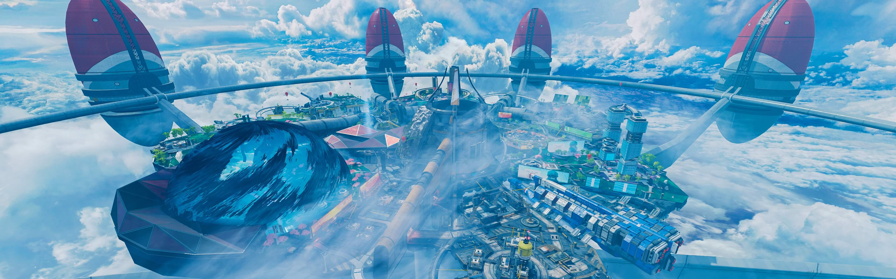
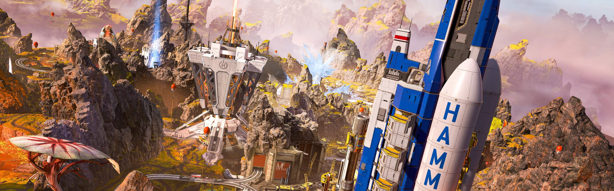

Choose from a lineup of outlaws, soldiers, misfits, and misanthropes, each with their own set of skills. The Apex Games welcome all comers – survive long enough, and they call you a Legend.
YOUR SQUAD
Pick your Legend and join forces with other players, combining your unique skills to form the ultimate squad.
A WORLD WHERE ANYTHING GOES
The Frontier War is over. After decades of conflict between the IMC and the militia founded to fight them, the region of space known as the Frontier can finally see peace.
But liberation can come at a cost: the Frontier worlds were left barren by the war, and promised aid dwindled to nothing. With no way to support themselves, those who remained had no choice but to leave their homes. The brave relocated to the Outlands.
A remote cluster of planets on the fringes of the Frontier, the Outlands are untouched by war and teeming with resources and opportunity. But life is cheap here, and danger lurks around every corner. Its pioneers, explorers, and outlaws used to spend their lives locked in an endless power struggle – now, they settle their differences in the Apex Games, a bloodsport where Legends from all corners of the Frontier compete for money, fame, and glory.
Maps

Olympus
Olympus was a city built on dreams. A utopia floating in clouds above Psamathe, it was once a place where the brightest minds in the Outlands could gather and exchange ideas, leading to breakthroughs in the sciences and arts. However, all dreams come to an end, and this one ended explosively: an accident in an experimental research facility led to the creation of the Phase Rift (a massive bubble of Phase energy), and the Outlands’ best and brightest quickly abandoned the city.
However, Olympus itself was maintained by advanced computer systems, so it quickly found new buyers in the Outlands’ elite. For 40 years, it served as a lavish vacation spot with the Rift as a tourist attraction. Unfortunately, the Rift grew unstable overtime, and Olympus was fully evacuated six months ago. Now Hammond Robotics, with the support of the Mercenary Syndicate, has transformed Olympus into a new stage for the Apex Games – though why is anyone’s guess.

World’s Edge
A harsh planet beset by intense volcanic activity, Talos was once deemed uninhabitable, and only small luddite settlements took root there. However, it became a hotbed of IMC activity when a rare mineral compound was discovered beneath its surface. Heat-reducing towers were built to super-cool its natural lava flows to allow resource extraction - the facility that housed them was optimistically dubbed “New Dawn”, and the town of World’s Edge grew around it.
Decades ago, an explosion in one of the towers covered the surrounding area in a lethal flash freeze. World’s Edge was abandoned, its only remaining inhabitants a small community of hunters who once spurned modern technology (but tentatively accepted it again under the guidance of their beloved local hero, Bloodhound). However, its ruins and the planet’s energy-rich soil drew the attention of two critical groups: the Mercenary Syndicate and Hammond Robotics. Today, World’s Edge is the second home of the Apex Games and a key operational center for Hammond Robotics, who installed the latest in modern mining technology - the Planet Harvester - to begin their own resource extraction.